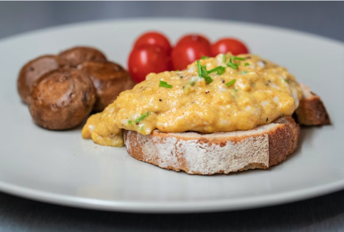

Scrambled Eggs

Scrumdidly scrambled
Experience the ultimate in Saturday, Sunday or any day of the week breaky heaven.
These scrumdidly scrambled eggs require a few extra ingridents and some of your
undivided attention.
Ingredients
- 6 eggs, straight out of the fridge and cold
- 15g butter,
- Seasoning, salt, pepper
- Crème fraîche
- Chives
- Chilli flakes, not optional - spice up that day sunshine
Cooking instructions
- Grab your 6 cold eggs, crack them into a frying pan that is non-stick.
- Add the butter slowly, it is best to do it gradually, a little here and there.
- Turn the burner up, it's cooking time.
- Use a rubber spatula and continually srape the bottom of the pan as the egg cooks.
- After 45 seconds, take the pan off the heat, and then keep stirring, after 20 seconds put it back on the heat. Do this for 3-4 minutes.
- Now the magic. Add a tablespoon of Crème fraîche and season with salt and pepper, add the chilli flakes too, if you are spicy and you know it.
- Plate up those eggs with the best bit of buttery bread you have, I, personally like some crusty fresh sourdough, because I love myself.